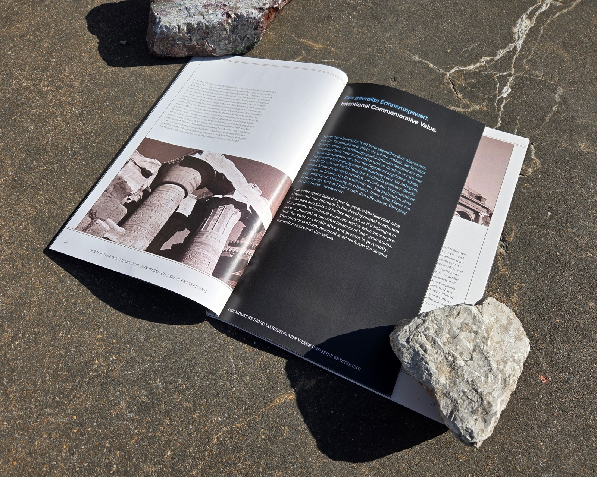
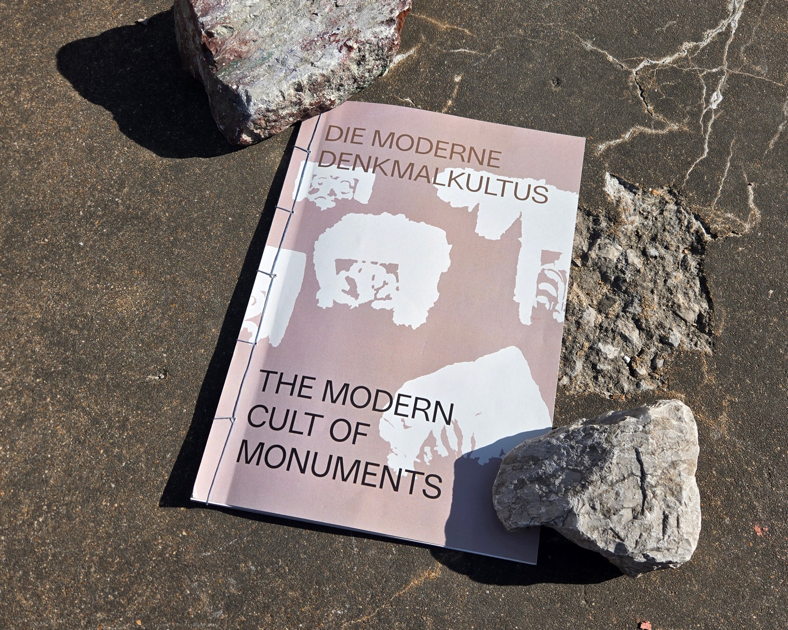
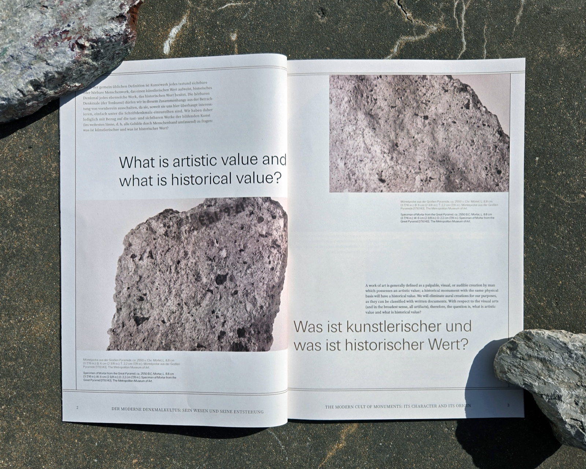
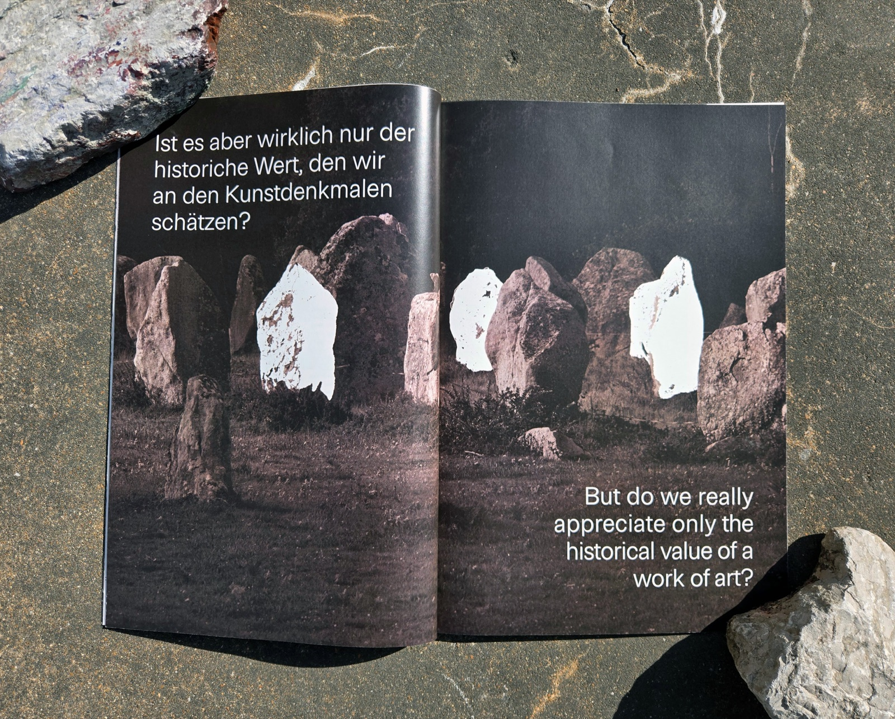
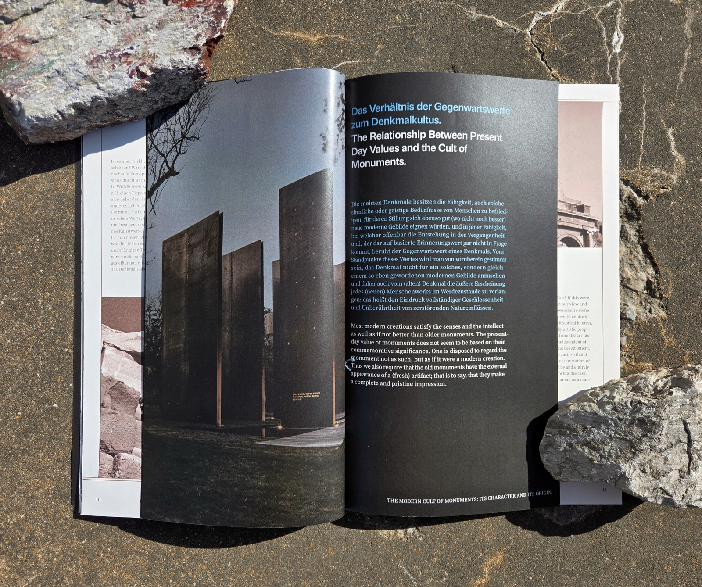

Die Moderne Denkmalkultus
- Editorial Design
- Bilingual Typography
- Image Treatment
This bilingual book, typeset in both German and English, explores the cultural significance of age in antique monuments through curated excerpts from Alois Riegl’s influential essays.
My design process began with a focus on how the tactile qualities of monuments evoke cultural memory and visible signs of age, shaping their perceived value and reverence. I sourced close-up archival images of antique monuments and applied a subtle filter to suggest the familiar, scanned texture of textbook illustrations.



Absence and decay
Working with these images prompted me to consider how absence and decay elevate the value of monuments over time. To reflect this, I introduced white-out shapes that obscure decorative areas, visually representing loss and transformation. Exploring how these values influence the design of modern monuments, I created a mini-book within the main volume to highlight this cultural evolution.


Historical significance
These design choices invite reflection on what creates historical significance in public objects, and how modern monuments attempt to evoke such meaning even in the absence of authentic historical memory.